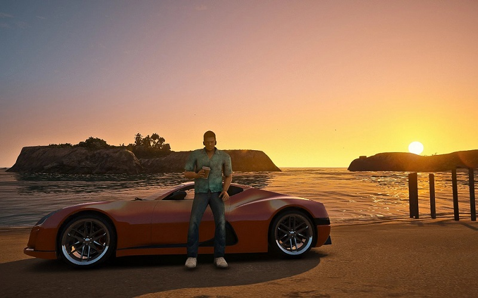

What's up! I'm a 70 year old punk. I'm also called 'Bad ass' Vercetti Suit dude.
I'm a former member of the Forelli Crime Family in Liberty City.
I killed all my enemies and became the chief criminal mastermind of Vice City.
You can blame my mother. I do.
TOMMYVERCETTI
You obviously want to know more about me. I'm going to tell you what it's like to be Tommy Vercetti.
I was born in Liberty City in 1951. My father worked in printing, and as a child I cleaned rollers with him. I planned to follow in my father's footsteps, but, in his own words, "led a different life".
Sometime before 1971 I joined the Forelli crime family, one of the three main Mafia families in Liberty City and the most powerful at the time. I continued to work for the Forelli family, moving up the ladder and presumably becoming the man they made their own. In 1971, Sonny Forelli, fearing my growing influence, tried to ambush me in the guise of a contract killing at Harwood. However, not only did I survive, but I killed all eleven men sent to kill me. I was arrested and convicted of eleven counts of murder. I was sentenced to death for the murders, but because I kept quiet and did not give up evidence to the Forelli family, Sonny Forelli used court connections to commute my sentence. I remained in prison for fifteen years, refusing to divulge Forelli family secrets to the LCPD. In the press I was nicknamed "The Harwood Butcher.
After I got out of prison in 1986, I continued to deal drugs through Sonny. I met Lance Vance in the course of all kinds of deals, and then he betrayed me and went over to Sonny's side. In the process I killed Lance and Sonny and became the most powerful man in Vice City.
Like I said before I'm a pretty rich bastard. I want to introduce you to my car collection.

One of the newest car in my collection. I won't tell you the make of the car. They don't pay me for advertising. This beautiful baby takes me around all kinds of beautiful places in this brilliant city called Vice City. All the girls in this town want to take her for a ride, but only a select few are allowed to do so.
And this is my gangster car. Most of the criminal acts were committed in it. It's a 1967 Chevrolet. 425 horsepower. This baby can do 200 kilometers an hour. I remember the first time I drove it to my buddies' house. Those were the days. Okay, lets take this up to the next level!
And this is the pegassi Infernus, a luxury two-door supercar. It has a top speed of 241 kilometers per hour. I first got behind the wheel of this car when Lance Vance drove it to my place to do some criminal work. I like to drive it around with the girls. This picture was taken at the Vice City Beach party. I remember there were a lot of girls there, or was it just me? I think there's cocaine residue on the seat. You want some?
I'm the one standing in the oncoming traffic because I'm a car like this horse. You may ask: Tommy, why do you wear the same shirt? The answer is simple enough. I Like This Shirt.
I have quite a few possessions. I want to tell you about the best of them.
This is the most expensive property in my power. The Malibu Club. It's worth $100,000. It's where the best parties are held. It's where you can party your ass off. The best music, great alcohol, and VIP rooms.
My own car dealership with the latest cars of all types. Come, we'll find a car to suit all tastes!
Boat shop. How could it be without it? There is not a single influential man without his yacht.
You can't do without a strip club in the city. Everyone is willing to give their last hundred dollars to get into a VIP room with a beautiful woman they want.
And, of course, my two-story, luxury mansion. There's security at every turn, a boat pier, a helipad, statues and a gorgeous view of the ocean.
That's all I wanted to say about myself.You can find out more at the link below. Bye pricks!